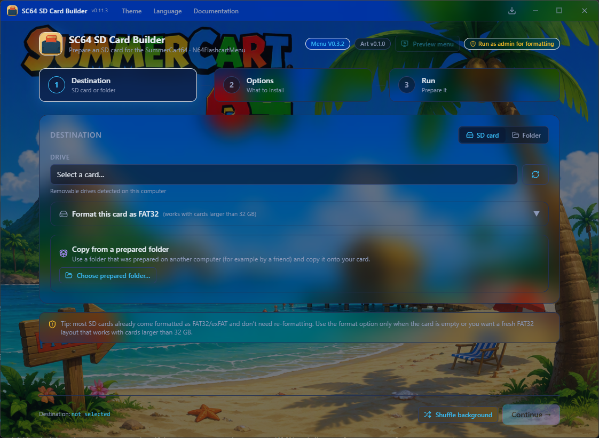

Build the SD card for your
SummerCart64, the easy way
Format your card, install the menu and metadata, drop in 64DD IPLs and emulators, and copy your entire ROM collection — in a single guided wizard.

verified 2,312 files menu config.ini written card clonedEverything your card needs, in one flow
One guided wizard replaces the usual pile of manual steps and shell commands.
Card detection & inspection
Picks your SD card, reads its size and format, inspects existing files and warns you before touching anything.
Format FAT32 / exFAT
Formats your card to FAT32 or exFAT with drive selection, a typed safety confirmation and an optional full zero-out format.
Menu & metadata install
Downloads the latest SummerCart64 menu (N64FlashcartMenu) and its metadata, and installs it on your card.
64DD IPL & emulators
Installs the 64DD IPL ROMs and the built-in emulator cores — NES, SNES, Game Boy, SMS and Channel F.
ROM collection copy
Copies N64, 64DD, NES, SNES, GB/GBC, SMS/GG and Channel F ROMs from folders or zip/7z archives.
Clean & organize
Deduplicates the collection, renames with region tags, keeps your folder structure, and excludes the stock folders.
Cheats & saves
Installs the cheats database, back up and restore your saves, and decides how in-game saves are stored.
Verify every write
Re-reads each copied file to confirm it landed intact, and detects unhealthy or fake cards before they bite.
Card → card clone
Clone an existing prepared card straight onto another, with verification forced on so nothing is silently lost.
Menu config
Generates the menu's config.ini for you — including saving games straight to a folder on the card.
Live preview
An on-screen preview of the menu mirrors what the cart will show, including folder navigation and icons.
Build report
After every run you get an HTML or CSV report of what was copied, skipped, overwritten and verified.
How it works
A single wizard walks you from empty card to ready-to-play.
1 — Destination
Pick the SD card (or a prepared folder) to build. Format it to FAT32 or exFAT, inspect what's on it, or clone an existing card.
2 — Options
Choose what to install: menu + metadata, 64DD IPLs, emulators, your ROM folders and archives, cheats, saves, and how to organize it all.
3 — Run
Watch per-file progress, live step status and a full activity log. When it's done, pull the card and play.
Fourteen themes, just like the app
Try the same Gallery Glass family, solid palettes and light mode the app ships with.
Runs where you do
🪟 Windows
- Installer and portable builds
- x64 & ARM64
- Auto-updates, self-updating portable
🍎 macOS
- DMG and ZIP builds
- Intel & Apple Silicon
- Signed & notarized releases
🐧 Linux
- AppImage and archives
- x64 & ARM64
- Runs on most modern distros
Frequently asked questions
Ready to build your card?
Grab the latest release for your operating system, plug in an SD card, and let the wizard handle the rest.
Get SC64 SD Card Builder